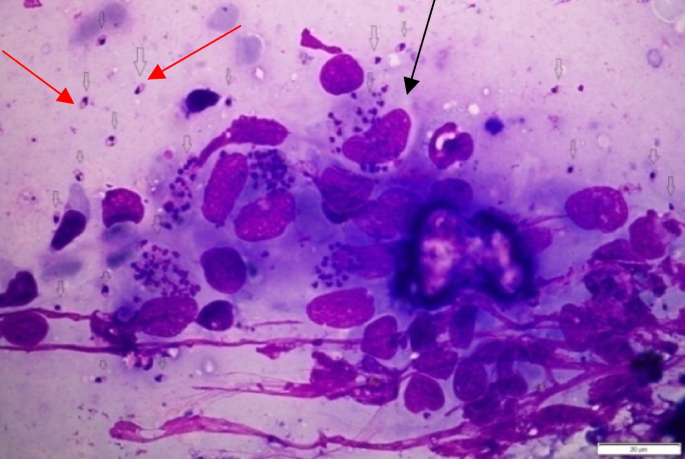

Leishmaniose Visceral: Definição e Contágio
Definição
- Zoonose de evolução crônica com acometimento sistêmico
- Também conhecida como Calazar
- Causada pelo protozoário Leishmania chagasi
- Doença infecciosa sistêmica com alta letalidade se não tratada
- Se não tratada, pode levar a óbito em até 90% dos casos
Meio de Contágio
- Transmissão pela picada de fêmeas do inseto flebotomíneo
- Conhecido popularmente como:
- • Mosquito palha
- • Asa-dura
- • Tatuquiras
- • Birigui
- No Brasil, principal espécie: Lutzomyia longipalpis
- Ciclo: fêmeas infectadas picam cães ou outros animais infectados, depois picam o homem

Leishmania visualizada ao microscópio

Mosquito-palha (Lutzomyia longipalpis) - vetor da Leishmaniose Visceral